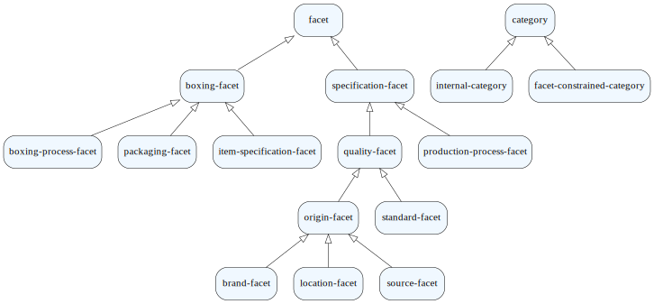
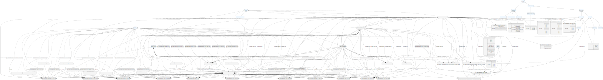

‘Semantic search’.¶
[ ]:
from cognipy.ontology import Ontology
from cognipy.ontology import CQL
from cognipy.ontology import ABoxBatch
from cognipy.ontology import encode_string_for_graph_label
from cognipy.edit import CnlEditBox
from cognipy.edit import CnlQueryForConcept
import random
import textwrap
import numpy as np
def graph_attribute_formatter(val):
if isinstance(val,list) or isinstance(val,set):
return " | ".join(list(map(lambda i:encode_string_for_graph_label(graph_attribute_formatter(i)),val)))
elif isinstance(val,dict):
return " | ".join(list(map(lambda i:i[0]+" : "+encode_string_for_graph_label(graph_attribute_formatter(i[1])),val.items())))
else:
return encode_string_for_graph_label(textwrap.fill(str(val),40))
def string_evaluator(e):
return eval(str(e).encode('utf-8').decode('unicode_escape'),globals(),locals())
from pint import UnitRegistry
ureg = UnitRegistry()
Q = ureg.Quantity
def Qstr(a):
return "Q('"+str(a)+"')"
Q.__repr__=Qstr
import ipywidgets as widgets
[13]:
ed=CnlEditBox('meta.encnl')
ed
[14]:
Ontology("cnl/file",'meta.encnl').draw_graph()
[14]:

[15]:
ed=CnlEditBox('meat-beef.encnl')
ed
[16]:
onto = Ontology("cnl/file",'meat-beef.encnl', evaluator = string_evaluator, graph_attribute_formatter = graph_attribute_formatter)
onto.draw_graph(include={"is-broader-trans-than"} )
[16]:

[17]:
def generateMoreFromExisting(onto):
with open('meat-beef-cat.encnl','wt') as file:
for iName in onto.select_instances_of("a product")["Instance"]:
iCatName=iName.replace('"Product$','"Category$')
iCatName=iCatName[:iCatName.rfind('/')]+'"'
file.writelines(iName+" is-inside "+iCatName+".\n")
for index,row in onto.select_instances_of("a facet").iterrows():
iFacet = row["Instance"]
values= row["has-value"]
for val in values:
fval=iFacet[:-1]+"/"+val+'"'
file.writelines(fval+" is a facet-option.\n")
file.writelines(fval+' is-an-option-for '+iFacet+'.\n')
file.writelines("""
References:
[] ('./meat-beef.encnl').""")
[18]:
generateMoreFromExisting(onto)
ed2=CnlEditBox('meat-beef-cat.encnl')
ed2
[19]:
onto = Ontology("cnl/file",'meat-beef-cat.encnl', evaluator = string_evaluator, graph_attribute_formatter = graph_attribute_formatter)
[20]:
import pandas as pd
import fuzzy
[21]:
dmeta = fuzzy.DMetaphone()
def makeTags(wrd):
wrdl=wrd.lower()
tgs=[(0,wrdl)]
if len(wrdl)>4:
tags = dmeta(wrdl)
for t in tags:
if not t is None:
tgs.append((1,t))
return tgs
def tagifySerie(ser):
data = []
for iName in ser:
name=iName[iName.find('$')+1:-1]
name_tags=[]
for x in name.split('/'):
for y in x.split('='):
for yy in y.split(','):
for z in yy.split(' '):
name_tags.extend(makeTags(z))
for t in set(name_tags):
data.append([t,iName])
return pd.DataFrame(data,columns=['tag','id'])
def tagsForString(searchStr,exclude):
dmeta = fuzzy.DMetaphone()
toret= [x for y in [makeTags(w) for w in searchStr.split(' ')] for x in y if (not x is None) and (not x in exclude)]
return set(toret)
[22]:
def tagifySerie2(ser):
data = []
for iName in ser:
name=iName[iName.find('$')+1:-1]
name_tags=[]
for x in name.split('/'):
for y in x.split('='):
for yy in y.split(','):
spl=yy.split(' ')
name_tags.extend([(s,0) for s in spl])
if len(spl)==2:
name_tags.append((tuple(spl),1))
more = [(dmeta(t[0]),2) if isinstance(t[0],str) else ((dmeta(t[0][0]),dmeta(t[0][1])),3) for t in name_tags]
for t in set(name_tags.extend(more)):
data.append([t,iName])
return pd.DataFrame(data,columns=['tag','id'])
[23]:
def buildBroaderThanThanRelation(catspd,rel, columns=["id","subid"]):
data = []
for index, row in catspd.iterrows():
iName = row["Instance"]
iBroaders = row[rel]
if not iBroaders is None:
if isinstance(iBroaders, str):
data.append([iName,iBroaders])
else:
for iBroader in iBroaders:
data.append([iName,iBroader])
return pd.DataFrame(data, columns=columns).drop_duplicates()
[24]:
def buildInsideCategoryRelation(prodspd,rel, columns=["id","mainid"]):
data = []
for index, row in prodspd.iterrows():
iName = row["Instance"]
iCat = row[rel]
if not iCat is None:
data.append([iName,iCat])
return pd.DataFrame(data, columns=columns).drop_duplicates()
[26]:
catspd=onto.sparql_query(CQL('select ?x ?y ?z {?x rdf:type <category>. optional{?y rdf:type <category>. ?x <is-broader-trans-than> ?y}. optional{?z rdf:type <facet>. ?x <is-faceted-by> ?z}}'),column_names=['Instance','is-broader-trans-than','is-faceted-by'])
categoryHierarchy=onto.sparql_query(CQL('select ?x ?y {?x rdf:type <category>. ?y rdf:type <category>. ?x <is-broader-than> ?y}'),column_names=['super','sub'])
prodspd=onto.sparql_query(CQL('select ?x ?y ?z {?x rdf:type <product>. optional{?y rdf:type <category>. ?x <is-inside> ?y}. optional{?z rdf:type <facet>. ?x <is-faceted-by> ?z}}'),column_names=['Instance','is-inside','is-faceted-by'])
facvalpd=onto.sparql_query(CQL('select ?x ?y {?x rdf:type <facet-option>. ?y rdf:type <facet>. ?x <is-an-option-for> ?y}'),column_names=['Instance','is-an-option-for'])
catetoryTagIndex=tagifySerie(catspd['Instance'].drop_duplicates())
categoryBroaderThanThanRelation=buildBroaderThanThanRelation(catspd,'is-broader-trans-than', columns=["broaderid","catid"])
productTagIndex =tagifySerie(prodspd['Instance'].drop_duplicates())
productInsideCategoryRelation=buildInsideCategoryRelation(prodspd,'is-inside', columns=["id","mainid"])
valuesInsideFacetRelation=buildInsideCategoryRelation(facvalpd,'is-an-option-for', columns=["id","mainid"])
facetValTagIndex =tagifySerie(facvalpd['Instance'].drop_duplicates())
categoryFacetRelation=buildBroaderThanThanRelation(catspd,'is-faceted-by', columns=["catid","facetid"])
productFacetRelation=buildBroaderThanThanRelation(prodspd,'is-faceted-by', columns=["prodid","facetid"])
database={'catetoryTagIndex':catetoryTagIndex,
'categoryBroaderThanThanRelation':categoryBroaderThanThanRelation,
'productTagIndex':productTagIndex,
'productInsideCategoryRelation':productInsideCategoryRelation,
'valuesInsideFacetRelation':valuesInsideFacetRelation,
'facetValTagIndex':facetValTagIndex,
'categoryFacetRelation':categoryFacetRelation,
'productFacetRelation':productFacetRelation,
'categoryHierarchy':categoryHierarchy
}
[27]:
def lookupForString(tagIndex,searchStr,exclude={},nmax=1):
pticnt=tagIndex.groupby(by='tag').count()
resc=tagIndex[(tagIndex['tag'].isin(tagsForString(searchStr,exclude)))][['tag','id']]
apl=resc.apply(lambda row: 1.0/pticnt[pticnt.index==row['tag']].sum(),axis=1)['id']
resc['frac']=apl
pdCounts=resc.groupby(by='id').sum()
if len(pdCounts)==0:
return []
max = list(pdCounts.nlargest(nmax,'frac')['frac'])
winCats=pdCounts[pdCounts['frac'].isin(max)]
wss=[(w.name,w['frac']) for i,w in winCats.iterrows()]
wss.sort(key=lambda x: x[1], reverse=True)
return [x for (x,y) in wss]
[28]:
searchStr='meat cow waygu sex cl 80'
selectedCatLst=lookupForString(database['catetoryTagIndex'],searchStr)
selectedCat = set(selectedCatLst)
if len(selectedCat)>0:
serie = database['productTagIndex']\
.join(database['productInsideCategoryRelation'][\
database['productInsideCategoryRelation']['mainid'].apply(lambda mainid:(mainid in selectedCat))]\
.set_index('id'),on=['id'],how='inner')
else:
serie = database['productTagIndex']
selectedProd=lookupForString(serie,searchStr,exclude=set(tagifySerie([selectedCatLst[0]])['tag']) if len(selectedCat)>0 else {})
if len(selectedProd)>0:
selectedCatLst=list(database['productInsideCategoryRelation'][database['productInsideCategoryRelation']['id'].isin(selectedProd)]['mainid'].drop_duplicates())
selectedCat=set(selectedCatLst)
else:
selectedProdLst=list(database['productInsideCategoryRelation'][database['productInsideCategoryRelation']['mainid'].isin(selectedCat)]['id'].drop_duplicates())
selectedProd=set(selectedProdLst)
if len(selectedProd)>0:
facetProdSerie = database['productFacetRelation'][database['productFacetRelation']['prodid'].isin(selectedProd)]
facetProdSerie = facetProdSerie.join(database['valuesInsideFacetRelation'].set_index('mainid'),on=['facetid'],how='inner')
facetProdSerie = database['facetValTagIndex'].join(facetProdSerie.set_index('id'),on=['id'],how='inner')
else:
facetProdSerie = None
if len(selectedCat)>0:
broaderThanSelectedCat = set(database['categoryBroaderThanThanRelation'][database['categoryBroaderThanThanRelation']['catid'].isin(selectedCat)]['broaderid'])
broaderOrEqualThanSelectedCat=selectedCat.union(broaderThanSelectedCat)
facetSerie = database['categoryFacetRelation'][database['categoryFacetRelation']['catid'].isin(broaderOrEqualThanSelectedCat)]
facetSerie = facetSerie.join(database['valuesInsideFacetRelation'].set_index('mainid'),on=['facetid'],how='inner')
facetSerie = database['facetValTagIndex'].join(facetSerie.set_index('id'),on=['id'],how='inner')
else:
facetSerie = database['facetValTagIndex']
selectedFacetVal=lookupForString(facetSerie,searchStr,exclude=set(tagifySerie([selectedCatLst[0]])['tag']) if len(selectedCat)>0 else {},nmax=100000)
if not facetProdSerie is None:
selectedFacetProdVal=lookupForString(facetProdSerie,searchStr,exclude=set(tagifySerie([selectedCatLst[0]])['tag']) if len(selectedCat)>0 else {},nmax=100000)
else:
selectedFacetProdVal=[]
selectedFacetLst=[]
if len(selectedFacetVal)>0:
selectedFacetLst=list(database['valuesInsideFacetRelation'][database['valuesInsideFacetRelation']['id'].isin(selectedFacetVal)]['mainid'].drop_duplicates())
if len(selectedProd)>0:
selectedCatLst=list(database['productInsideCategoryRelation'][database['productInsideCategoryRelation']['id'].isin(selectedProd)]['mainid'].drop_duplicates())
selectedCat=set(selectedCatLst)
selectedFacetProdLst=[]
if len(selectedFacetProdVal)>0:
selectedFacetProdLst=list(database['valuesInsideFacetRelation'][database['valuesInsideFacetRelation']['id'].isin(selectedFacetProdVal)]['mainid'].drop_duplicates())
selectedProdLst=database['productFacetRelation'][database['productFacetRelation']['facetid'].isin(selectedFacetProdLst)]['prodid']
selectedProd = set(selectedProdLst)
if len(selectedProd)>0:
selectedCatLst=list(database['productInsideCategoryRelation'][database['productInsideCategoryRelation']['id'].isin(selectedProd)]['mainid'].drop_duplicates())
selectedCat=set(selectedCatLst)
possibleFacets = {}
if len(selectedCat)>0:
broaderThanSelectedCat = set(database['categoryBroaderThanThanRelation'][database['categoryBroaderThanThanRelation']['catid'].isin(selectedCat)]['broaderid'])
broaderOrEqualThanSelectedCat=selectedCat.union(broaderThanSelectedCat)
possibleFacets = set(database['categoryFacetRelation'][database['categoryFacetRelation']['catid'].isin(broaderOrEqualThanSelectedCat)]['facetid'])
if len(selectedProd)>0:
facetProdSerie = database['productFacetRelation'][database['productFacetRelation']['prodid'].isin(selectedProd)]['facetid']
possibleFacets=possibleFacets.union(facetProdSerie)
facets=[]
for facet in possibleFacets:
fctvals=set(database['valuesInsideFacetRelation'][database['valuesInsideFacetRelation']['mainid']==facet]['id'])
tags = database['facetValTagIndex'][database['facetValTagIndex']['id'].isin(fctvals)]
selectedFacetVal=lookupForString(tags,searchStr,exclude=set(tagifySerie([selectedCatLst[0]])['tag']) if len(selectedCat)>0 else {},nmax=1)
facets.append({'facet':facet, 'value':selectedFacetVal[0] if len(selectedFacetVal)>0 else None})
ret={'category':selectedCatLst, 'product':selectedProd, 'facets':facets}
ret
[28]:
{'category': ['The-"Internal$Food/Meat/Beef/Cut/Grinding"',
'The-"Category$Food/Meat/Beef"'],
'product': {'The-"Product$Food/Meat/Beef/Grinding=Minced"'},
'facets': [{'facet': 'The-"Facet$Food/Meat/Beef/Age Sex"',
'value': 'The-"Facet$Food/Meat/Beef/Age Sex/Cow=C"'},
{'facet': 'The-"Facet$Food/Meat/Minced"',
'value': 'The-"Facet$Food/Meat/Minced/80 CL"'},
{'facet': 'The-"Facet$Food/Meat/Beef/Meat Color"', 'value': None},
{'facet': 'The-"Facet$Food/Meat/Beef/Boxing Process"', 'value': None},
{'facet': 'The-"Facet$Food/Meat/Beef/Packaging"', 'value': None},
{'facet': 'The-"Facet$Food/Meat/Beef/Feeding"', 'value': None},
{'facet': 'The-"Facet$Food/Meat/Beef/Breed"',
'value': 'The-"Facet$Food/Meat/Beef/Breed/Wagyu/Tajima,Kobe"'},
{'facet': 'The-"Facet$Food/Meat/Beef/Fat Color"', 'value': None},
{'facet': 'The-"Facet$Food/Meat/Beef/Brand"', 'value': None},
{'facet': 'The-"Facet$Food/Meat/Beef/Marbling"', 'value': None}]}
[ ]:
[29]:
def smartLookup(database,searchStr):
selectedCatLst=lookupForString(database['catetoryTagIndex'],searchStr)
selectedCat = set(selectedCatLst)
if len(selectedCat)>0:
serie = database['productTagIndex']\
.join(database['productInsideCategoryRelation'][\
database['productInsideCategoryRelation']['mainid'].apply(lambda mainid:(mainid in selectedCat))]\
.set_index('id'),on=['id'],how='inner')
else:
serie = database['productTagIndex']
selectedProd=lookupForString(serie,searchStr,exclude=set(tagifySerie([selectedCatLst[0]])['tag']) if len(selectedCat)>0 else {})
if len(selectedProd)>0:
selectedCatLst=list(database['productInsideCategoryRelation'][database['productInsideCategoryRelation']['id'].isin(selectedProd)]['mainid'].drop_duplicates())
selectedCat=set(selectedCatLst)
else:
selectedProdLst=list(database['productInsideCategoryRelation'][database['productInsideCategoryRelation']['mainid'].isin(selectedCat)]['id'].drop_duplicates())
selectedProd=set(selectedProdLst)
if len(selectedProd)>0:
facetProdSerie = database['productFacetRelation'][database['productFacetRelation']['prodid'].isin(selectedProd)]
facetProdSerie = facetProdSerie.join(database['valuesInsideFacetRelation'].set_index('mainid'),on=['facetid'],how='inner')
facetProdSerie = database['facetValTagIndex'].join(facetProdSerie.set_index('id'),on=['id'],how='inner')
else:
facetProdSerie = None
if len(selectedCat)>0:
broaderThanSelectedCat = set(database['categoryBroaderThanThanRelation'][database['categoryBroaderThanThanRelation']['catid'].isin(selectedCat)]['broaderid'])
broaderOrEqualThanSelectedCat=selectedCat.union(broaderThanSelectedCat)
facetSerie = database['categoryFacetRelation'][database['categoryFacetRelation']['catid'].isin(broaderOrEqualThanSelectedCat)]
facetSerie = facetSerie.join(database['valuesInsideFacetRelation'].set_index('mainid'),on=['facetid'],how='inner')
facetSerie = database['facetValTagIndex'].join(facetSerie.set_index('id'),on=['id'],how='inner')
else:
facetSerie = database['facetValTagIndex']
selectedFacetVal=lookupForString(facetSerie,searchStr,exclude=set(tagifySerie([selectedCatLst[0]])['tag']) if len(selectedCat)>0 else {},nmax=100000)
if not facetProdSerie is None:
selectedFacetProdVal=lookupForString(facetProdSerie,searchStr,exclude=set(tagifySerie([selectedCatLst[0]])['tag']) if len(selectedCat)>0 else {},nmax=100000)
else:
selectedFacetProdVal=[]
selectedFacetLst=[]
if len(selectedFacetVal)>0:
selectedFacetLst=list(database['valuesInsideFacetRelation'][database['valuesInsideFacetRelation']['id'].isin(selectedFacetVal)]['mainid'].drop_duplicates())
if len(selectedProd)>0:
selectedCatLst=list(database['productInsideCategoryRelation'][database['productInsideCategoryRelation']['id'].isin(selectedProd)]['mainid'].drop_duplicates())
selectedCat=set(selectedCatLst)
selectedFacetProdLst=[]
if len(selectedFacetProdVal)>0:
selectedFacetProdLst=list(database['valuesInsideFacetRelation'][database['valuesInsideFacetRelation']['id'].isin(selectedFacetProdVal)]['mainid'].drop_duplicates())
selectedProdLst=database['productFacetRelation'][database['productFacetRelation']['facetid'].isin(selectedFacetProdLst)]['prodid']
selectedProd = set(selectedProdLst)
if len(selectedProd)>0:
selectedCatLst=list(database['productInsideCategoryRelation'][database['productInsideCategoryRelation']['id'].isin(selectedProd)]['mainid'].drop_duplicates())
selectedCat=set(selectedCatLst)
possibleFacets = {}
if len(selectedCat)>0:
broaderThanSelectedCat = set(database['categoryBroaderThanThanRelation'][database['categoryBroaderThanThanRelation']['catid'].isin(selectedCat)]['broaderid'])
broaderOrEqualThanSelectedCat=selectedCat.union(broaderThanSelectedCat)
possibleFacets = set(database['categoryFacetRelation'][database['categoryFacetRelation']['catid'].isin(broaderOrEqualThanSelectedCat)]['facetid'])
if len(selectedProd)>0:
facetProdSerie = database['productFacetRelation'][database['productFacetRelation']['prodid'].isin(selectedProd)]['facetid']
possibleFacets=possibleFacets.union(facetProdSerie)
facets=[]
for facet in possibleFacets:
fctvals=set(database['valuesInsideFacetRelation'][database['valuesInsideFacetRelation']['mainid']==facet]['id'])
tags = database['facetValTagIndex'][database['facetValTagIndex']['id'].isin(fctvals)]
selectedFacetVal=lookupForString(tags,searchStr,exclude=set(tagifySerie([selectedCatLst[0]])['tag']) if len(selectedCat)>0 else {},nmax=1)
facets.append({'facet':[facet], 'value':[selectedFacetVal[0] if len(selectedFacetVal)>0 else None]})
return {'category':selectedCatLst, 'product':selectedProd, 'facets':facets}
[30]:
import ipywidgets as widgets
from IPython.display import display,HTML,clear_output
from flask_table import Table, Col, NestedTableCol
[31]:
def getCategoryUI(database, category,clb):
c=[c for c in category if c.startswith('The-"Category$')]
if(len(c)>0):
mainCat = c[0]
else:
mainCat = 'The-"Category$Food"'
nameMainCat=mainCat[mainCat.find('$')+1:-1].split('/')
curName=''
menu=[]
for n in nameMainCat:
curName=curName+'/'+n if curName!='' else n
curNameIns = 'The-"Category$'+curName+'"'
subIns = list(database['categoryHierarchy'][(database['categoryHierarchy']['super']==curNameIns) & (database['categoryHierarchy']['sub'].apply(lambda x: x.startswith('The-"Category$')))]['sub'])
if len(subIns)==0:
break
subNames = [c[c.find('$')+1:-1].split('/')[-1] for c in subIns ]
tobbut= widgets.ToggleButtons(
options=subNames,
description=curName,
disabled=False,
button_style='info', # 'success', 'info', 'warning', 'danger' or ''
tooltips=subIns,
value = None
# icons=['check'] * 3
)
menu.append(tobbut)
def on_value_change(b):
clb(b.owner.options[b.owner.index])
for i in range(len(menu)):
if i+1<len(nameMainCat):
menu[i].value=nameMainCat[i+1]
menu[i].observe(on_value_change, names='value')
return widgets.VBox(menu)
[32]:
def getProductUI(database, product,clb):
opc=[c[c.find('$')+1:-1].split('/')[-1] for c in product]
opc.sort()
tobbut= widgets.ToggleButtons(
options=opc,
description='Product',
disabled=False,
button_style='success', # 'success', 'info', 'warning', 'danger' or ''
tooltips=list(product),
value = None if len(product)>1 or len(product)==0 else opc[0]
# icons=['check'] * 3
)
def on_value_change(b):
clb(b.owner.options[b.owner.index])
tobbut.observe(on_value_change, names='value')
return tobbut
[33]:
def getFacetsUI(database, facets,clb):
menu=[]
for facetValDict in facets:
facetIns = facetValDict['facet'][0]
facetVal = facetValDict['value'][0] if not facetValDict['value'] is None else None
pp=database['valuesInsideFacetRelation'][database['valuesInsideFacetRelation']['mainid']==facetIns]
facetVals = list(pp['id'])
facetVals.sort()
facetNames = [c[c.find('$')+1:-1].split('/')[-1] for c in facetVals]
tobbut= widgets.ToggleButtons(
options=facetNames,
description=facetIns[facetIns.find('$')+1:-1].split('/')[-1],
disabled=False,
button_style='', # 'success', 'info', 'warning', 'danger' or ''
tooltips=list(facetVals),
value = facetVal[facetVal.find('$')+1:-1].split('/')[-1] if not facetVal is None else None
# icons=['check'] * 3
)
menu.append(tobbut)
def on_value_change(b):
clb(b.owner.options[b.owner.index])
tobbut.observe(on_value_change, names='value')
return widgets.VBox(menu)
[34]:
InitValue = 'meat cow waygu'
import collections
edit_widget=widgets.Text(
value = InitValue,
placeholder='Type something',
disabled=False,
layout=widgets.Layout(width='90%'),
style={'description_width': 'initial'}
)
outoput_widget=widgets.Output()
outoput_prods_widget=widgets.Output()
def buildTextFromUI():
ui = outoput_widget.ui
catui = ui.children[0]
txt = ' '.join([tb.value for tb in catui.children if not tb.value is None])
if len(ui.children)>1:
produi,facetui = ui.children[1],ui.children[2]
if not produi.value is None:
txt = txt+ ' '+produi.value
txt = txt+ ' '+' '.join([tb.value for tb in facetui.children if not tb.value is None])
return txt
def onCategoryClicked(category):
edit_widget.value=buildTextFromUI()
def onProductClicked(product):
edit_widget.value=buildTextFromUI()
def onFacetClicked(facet):
edit_widget.value=buildTextFromUI()
def reload(searchStr):
with outoput_widget:
clear_output()
look=smartLookup(database,searchStr)
catui=getCategoryUI(database,look['category'],onCategoryClicked)
if len(look['product'])>0:
produi=getProductUI(database,look['product'],onProductClicked)
facetui=getFacetsUI(database,look['facets'],onFacetClicked)
ui = widgets.VBox([catui,produi,facetui])
else:
ui = widgets.VBox([catui])
outoput_widget.ui = ui
display(ui)
def onChange(change):
searchStr=change.new
reload(searchStr)
onChange(collections.namedtuple('x','new')(new=edit_widget.value))
edit_widget.observe(onChange, names=['cursor','value'])
widgets.HBox([widgets.VBox([edit_widget,outoput_widget],layout=widgets.Layout(width='50%')),outoput_prods_widget])
[ ]: